Trailer - Temporada 1: Jujutsu Kaisen
Temporadas

Episódio 1
Ryomen Sukuna
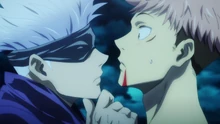
Episódio 2
Por mim mesmo
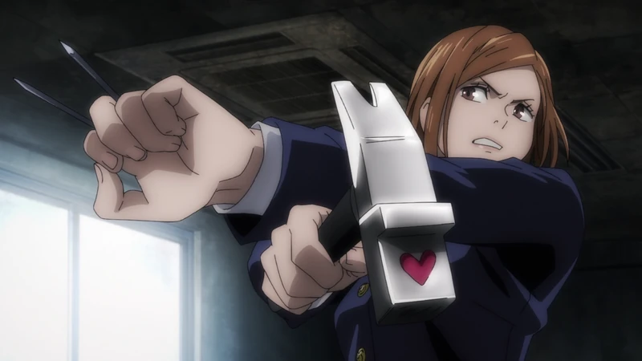
Episódio 3
Garota de aço
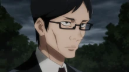
Episódio 4
Morte ao feto amaldiçoado
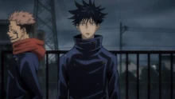
Episódio 5
Morte ao feto amaldiçoado 2
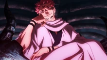
Episódio 6
Depois da Chuva
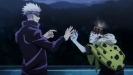
Episódio 7
Ataque
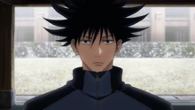
Episódio 8
Tédio
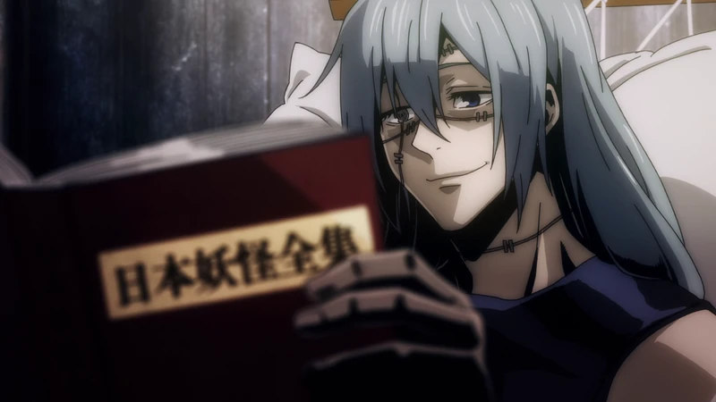
Episódio 9
Peixes Pequenos e Punições Reversas
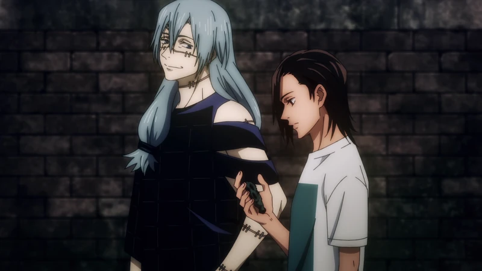
Episódio 10
Transfiguração Inerte
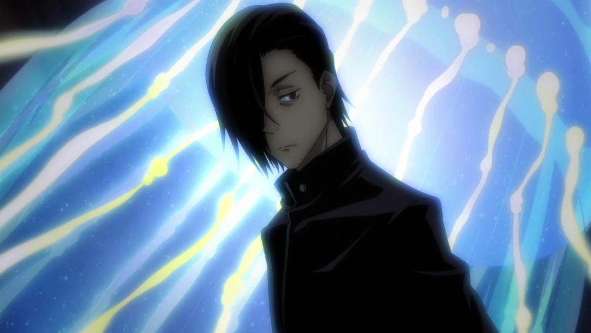
Episódio 11
Mente Fechada
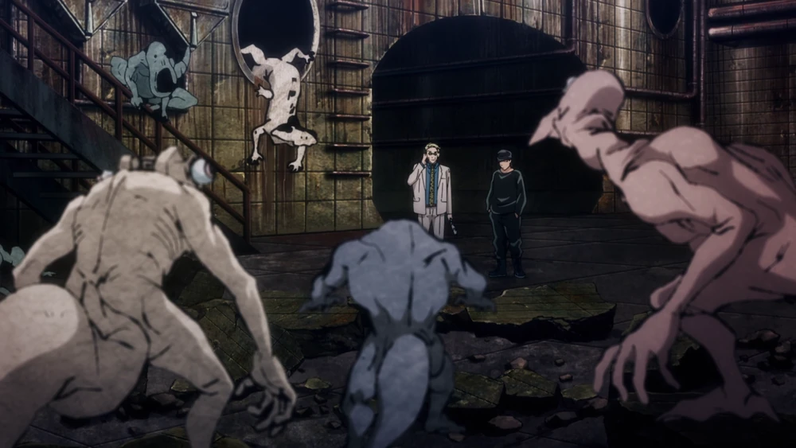
Episódio 12
Para você, em algum dia
Recomendações para você

Gachiakuta
2025
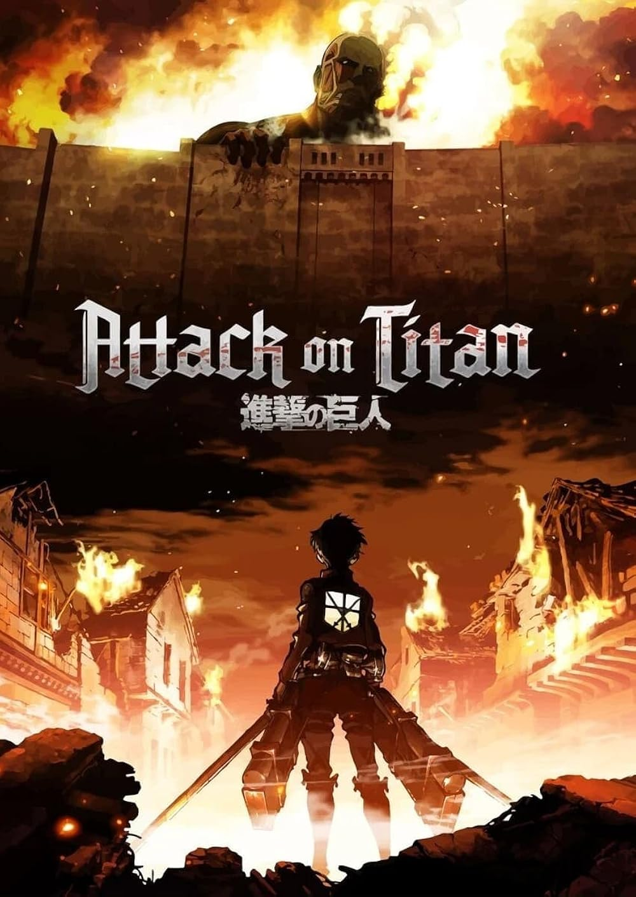
Attack on Titan
2025
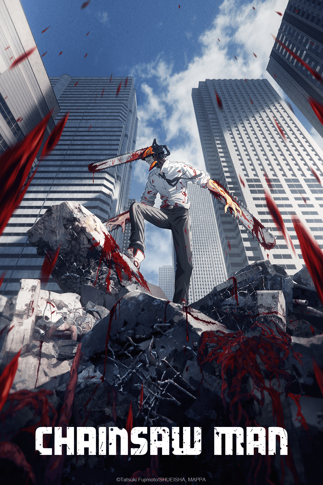
Chainsaw Man
2018
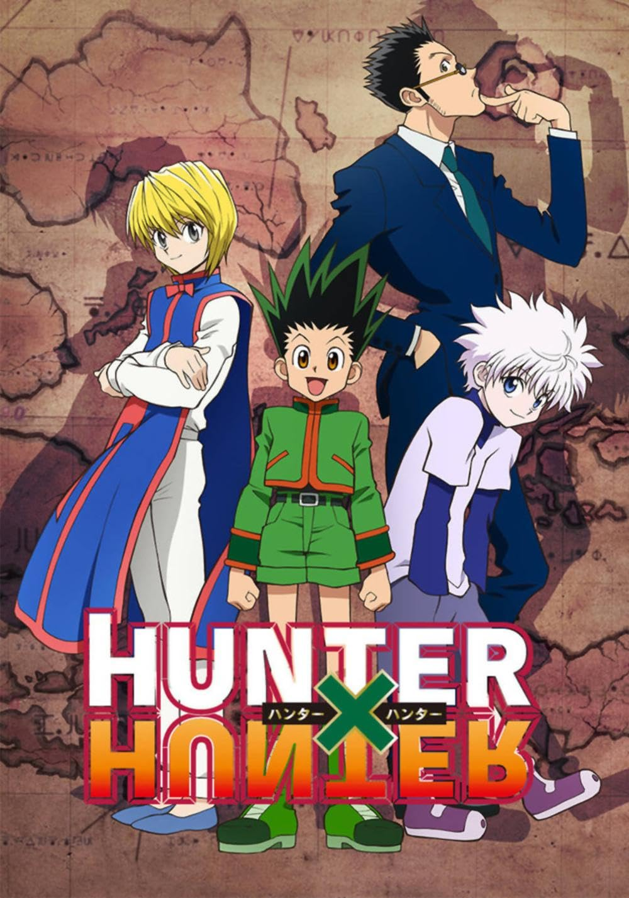
Hunter x Hunter
2011
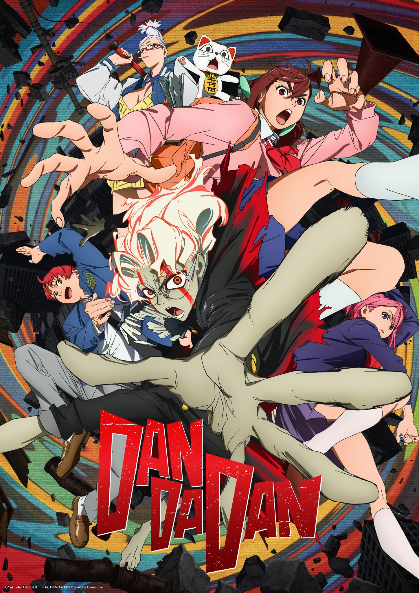
Dandadan
2024
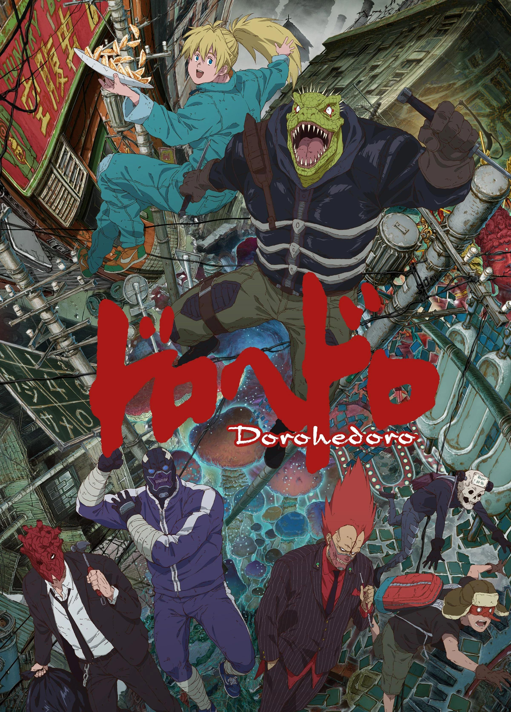
Dorohedoro
2020
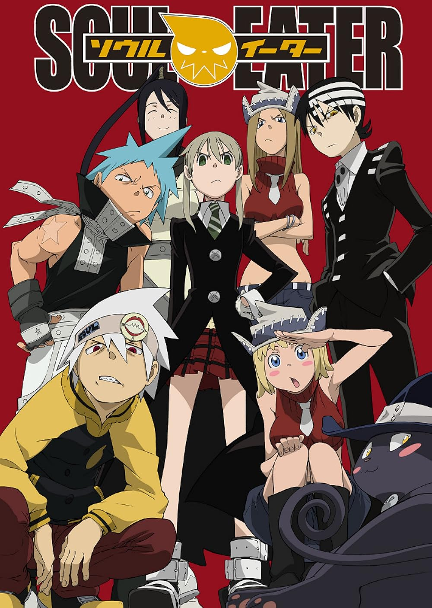
Soul Eater
2008
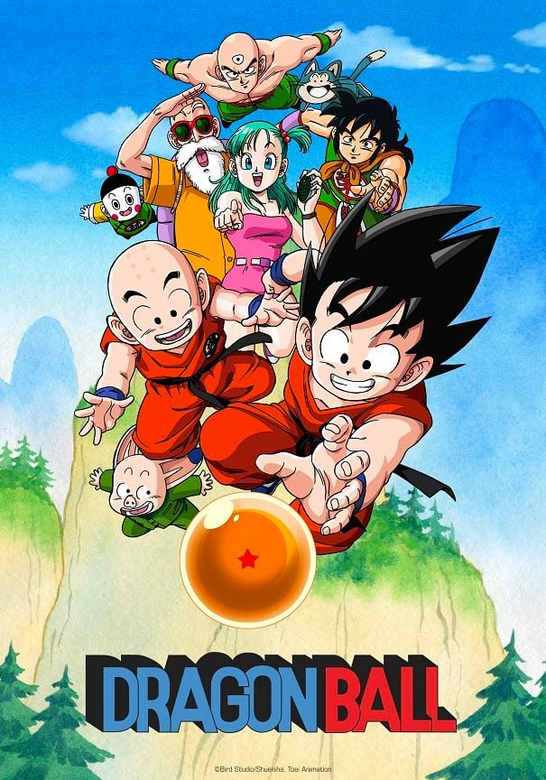
Dragon Ball
1999
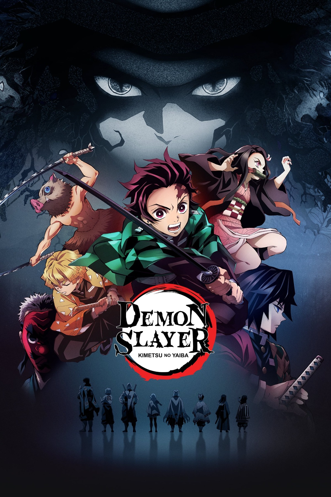
Demon Slayer
219